← Install · Contents · Getting started →
First steps
These steps are the same on a phone and on a desktop, except where a step says otherwise. The Getting started list at the top of the Inbox follows the same steps and ticks each one off. Tap a step to open its part of this guide. Press × on the list, then Hide until next start or Don't show again. To show it again: Configuration › Basic › Appearance › List › Show the Getting started checklist.
On a phone, the screen is too narrow for more than one thing at a time:
- The shelf is the list of everything you follow, plus Inbox, Saved, Search and Configuration. On a phone it is hidden. Tap ☰ at the top left to open it.
- An article opens over the whole screen. Tap ← to go back to the list.
- Configuration is at the bottom of the shelf. Tap it, then Basic or Advanced, then a page.
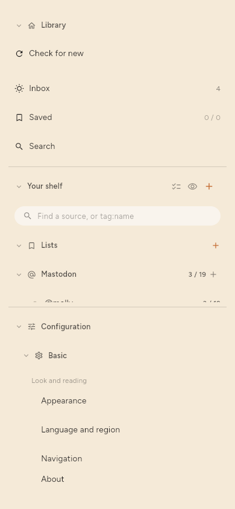
On a desktop, the shelf is always on the left, and an article opens beside the list.
1. Add your first source
A source is anything the app follows for you: a news site's feed, a video channel, a Mastodon account. A feed is the list of new articles that a site publishes for programs like this one.
The first time you open the app, it asks what you are curious about.
- Tap the subjects that interest you, then tap Continue.
- Tap a suggested source to follow it, or paste the address of a site or channel into the box and tap Add. Then tap Continue.
- Select Summarize what I read to let the app write summaries, or leave it clear. You can change this later (step 4).
- Tap Start reading.
To add sources later instead, tap Skip for now on the first screen.
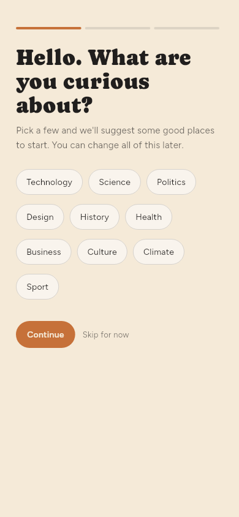
To add a source at any time:
- Open the shelf.
- Tap + beside Your shelf. The Add a link box opens.
- Paste the address.
- Tap Add. When the address is a source — a feed, a channel or an author — the box shows Follow the source and Save the page instead. Tap the one you want.
- If the site offers a choice, select the feed or the page itself. The app marks one as recommended.
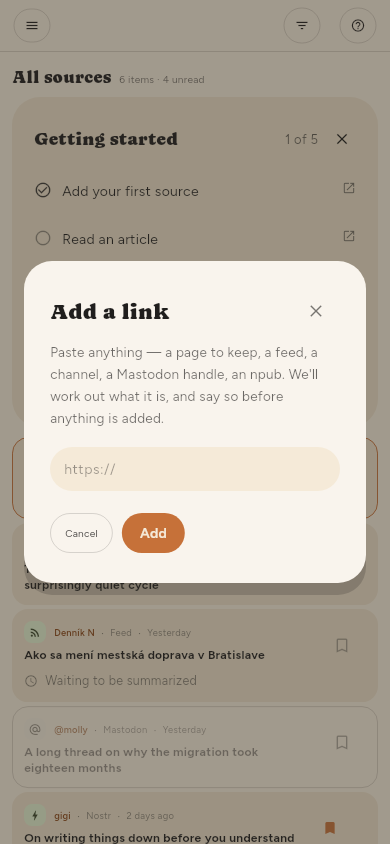
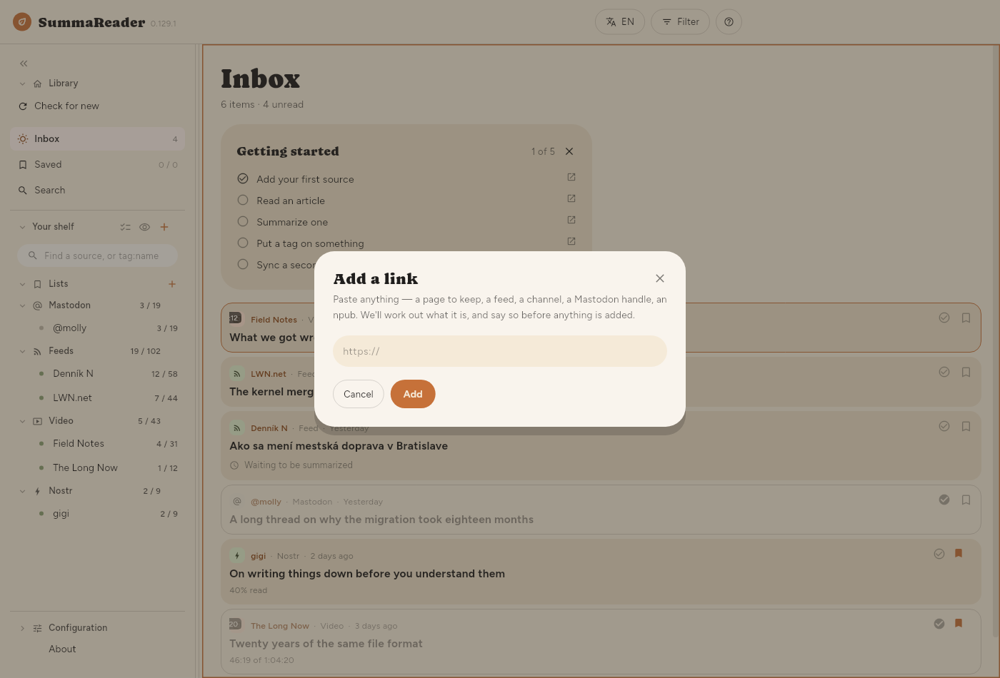
2. Check for new articles
When you tap Start reading, the app checks the sources that you selected one time. After that, a new installation checks only when you ask (see the end of this step). If the Inbox shows Nothing fetched yet, tap Check for new on it. To check now at any time:
- Open the shelf.
- Tap Check for new, below Library.
The new articles go into the Inbox.
To stop a check, tap Stop in the status strip at the bottom. The button changes to Stopping…. In each source, the app finishes the article that it reads now. It does not start the sources that wait. The articles that it got stay. The next check starts with the sources that it did not finish.
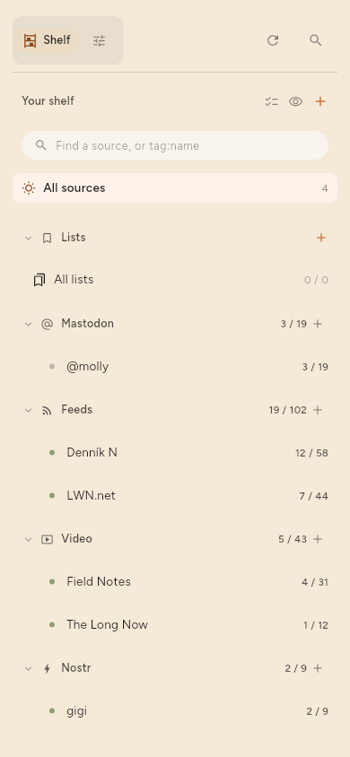
To change how often the app checks: Configuration › Basic › Fetching › How often to check. Only when I ask stops all automatic checks.
The first check gets the articles that the source has now. They are not new to you, so the app does not summarize them automatically. It summarizes only articles that arrive after you added the source.
3. Read an article
- Tap an article in the Inbox.
- Read it. The article has three tabs at the bottom: Summary, Source (the full text) and Details.
- On a phone, tap ← to go back to the list.
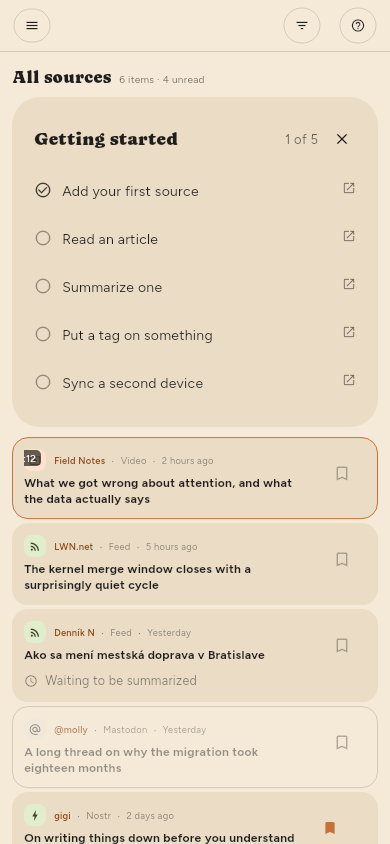
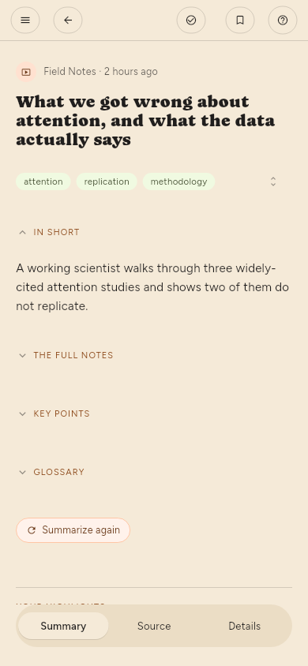
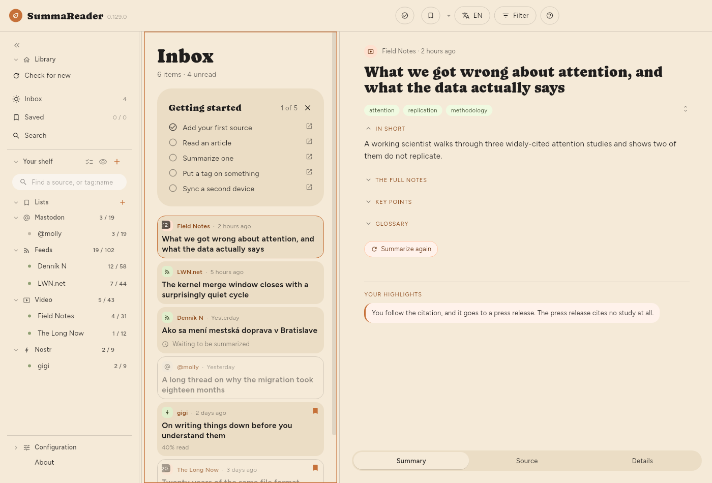
4. Turn on summaries and choose where they run
A summary is written by a model: a program that reads the article and writes a short version of it. The model runs in one of two places.
- This device — the model runs on your phone or computer. Nothing leaves the device. You download the model once. Summaries on this device are slow: a few minutes for each part of an article, and much longer on older phones and tablets.
- Remote LLM — the article goes to a server that runs the model: one you run yourself, or a paid service. A server is much faster. It is the only time an article's text leaves your device.
To set it up:
- Open Configuration › Basic › Summaries › Summarizing › Summarization and make sure that it is on.
- In Configuration › Basic › Summaries › Summarize on, select This device or Remote LLM. The first time you select This device, the app tells you that summaries here are slow. Summaries continue in the background while you read.
- For This device: open Configuration › Advanced › On-device model › Find a model, search, and download a model. Then, in Configuration › Advanced › On-device model › Models on this device, tap Start beside it.
- For Remote LLM: open Configuration › Advanced › LLM server › LLM server. Fill in Address, Model and, if the server needs one, the API key. Tap Test.
- Open an article and tap Summarize.
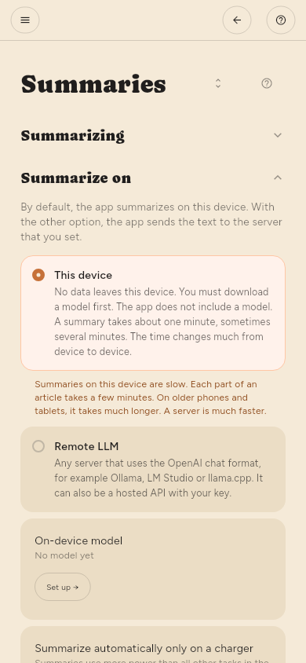
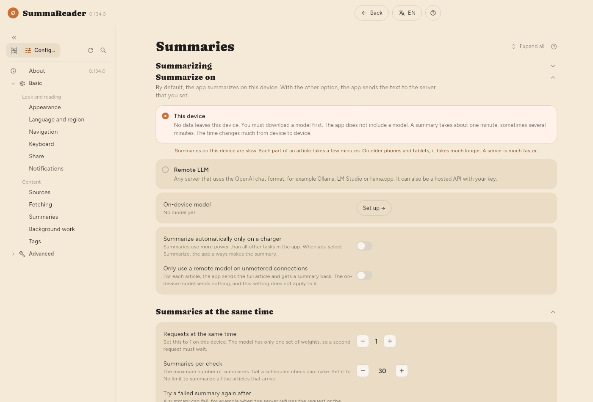
In Premium, the app can also summarize new articles automatically, after each check. Turn on Summarize in a source's settings (see Managing sources).
5. Put a tag on something, and keep it on a list (Premium only)
Tags and lists are in Premium.
A tag is a word you put on an article or a source, for example linux. The summary suggests tags.
- Open an article.
- Under the title, tap a suggested tag to accept it, or tap the pencil (Edit tags) to type your own.
A list keeps articles together. Saved is the first list.
- Open an article.
- Tap the bookmark at the top to save it on the current list.
- To use a different list, press and hold the bookmark, then select a list or make a new one.
6. Pair a second device
Sync keeps your devices in step: what you read, what you save, and the articles themselves. It needs a sync server that you run yourself. The server only stores encrypted data and cannot read your library.
Download the server from its releases page; Get the server says which file to take.
On the first device:
- Open Configuration › Advanced › Sync › Sync.
- Turn on Sync this device.
- Fill in Server address and Device token. The server gives you both.
- In Configuration › Advanced › Sync › Another device, tap Make a code. The app shows a QR code and the same code as text.
On the second device:
- Install the app and open Configuration › Advanced › Sync › Sync.
- Turn on Sync this device.
- Below Join with a code, tap Scan and point the camera at the QR code. On a device without a camera, paste the text code into the field. On Linux, a webcam can scan the code.
- Tap Use the code.
The code carries the key to your library. Show it only to your own device, and close it when you are done.
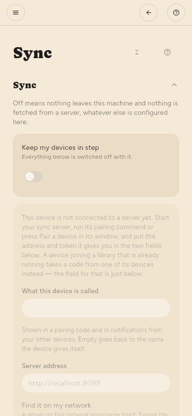
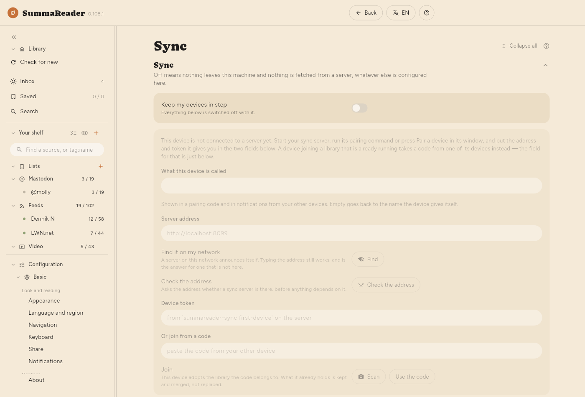
7. Make the recovery code
The recovery code is the only way back into your library if you lose every paired device. Nobody can make it again for you.
- Open Configuration › Advanced › Sync › Recovery key › Recovery code.
- Tap Create.
- Write the code down. Keep it in a place that you can still get to if this device is gone. The app shows it once and does not keep a copy.